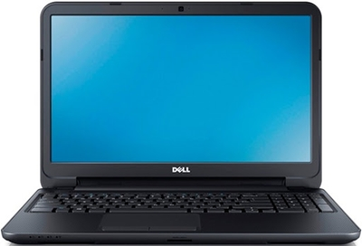
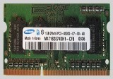

As the personal computer became feasible in the early 1970s, the idea of a portable personal computer followed. A "personal, portable information manipulator" was imagined by Alan Kay at Xerox PARC in 1968, and described in his 1972 paper as the "Dynabook". The IBM SCAMP project (Special Computer APL Machine Portable), was demonstrated in 1973. This prototype was based on the IBM PALM processor (Put All Logic In Microcode or 128 bit).
The IBM 5100, the first commercially available portable computer, appeared in September 1975, and was based on the SCAMP prototype. As 8-bit CPU machines became widely accepted, the number of portables increased rapidly. The Osborne 1, released in 1981, used the Zilog Z80 and weighed 23.6 pounds (10.7 kg). It had no battery, a 5 in (13 cm) CRT screen, and dual 5.25 in (13.3 cm) single-density floppy drives. In the same year the first laptop-sized portable computer, the Epson HX-20, was announced. The Epson had a LCD screen, a rechargeable battery, and a calculator-size printer in a 1.6 kg (3.5 lb) chassis. Both Tandy/RadioShack and HP also produced portable computers of varying designs during this period.
The first laptops using the flip form factor appeared in the early 1980s. The Dulmont Magnum was released in Australia in 1981-82, but was not marketed internationally until 1984-85. The $8,150 ($19,630 today) GRiD Compass 1100, released in 1982, was used at NASA and by the military among others. The Gavilan SC, released in 1983, was the first computer described as a "laptop" by its manufacturer. From 1983 onward, several new input techniques were developed and included in laptops, including the touchpad (Gavilan SC, 1983), the pointing stick (IBM ThinkPad 700, 1992) and handwriting recognition (Linus Write-Top, 1987). Some CPUs, such as the 1990 Intel i386SL, were designed to use minimum power to increase battery life of portable computers, and were supported by dynamic power management features such as Intel SpeedStep and AMD PowerNow! in some designs.
Displays reached VGA resolution by 1988 (Compaq SLT/286), and colour screens started becoming a common upgrade in 1991 with increases in resolution and screen size occurring frequently until the introduction of 17"-screen laptops in 2003. Hard drives started to be used in portables, encouraged by the introduction of 3.5" drives in the late 1980s, and became common in laptops starting with the introduction of 2.5" and smaller drives around 1990; capacities have typically lagged behind physically larger desktop drives. Optical storage, read-only CD-ROM followed by writeable CD and later read-only or writeable DVD and Blu-ray, became common in laptops soon in the 2000s.
Laptops still use the same operating systems as desktop computers; hard drives are partitioned and formatted in the same way, keyboards function in much the same way. You can attach peripherals such as a printer or scanner, input data from flash drives, digital cameras etc. Use the internet, send and receive e-mails, play your video or music files create your text and graphical images, transfer and backup your files to external hard drives or flash drives, all with the added ability of being able to take this with you when you travel, a portable office or home entertainment system that is small and lightweight and can be transported with relative ease.
There are fundamental differences between desktop and laptop computers, with a laptop computer the CPUs need to reduce their size, power usage, and heat generation, Ram modules, hard drives and wireless cards use a smaller form factor, and input and output ports can be specific to the requirements of the individual make and model which means that there is no real motherboard form factor as there is with desktop computers. If you're looking to increase the laptops functionality to have desktop capabilities, where you can utilise external monitors, keyboards, optical drives, 5.1 sound systems etc. this can be done by the various connectors like USB, RJ45 for Ethernet connectivity, AGP and DVI for external monitors, these connectors can be found around the outside edges of the laptop, most modern laptop computers now have built-in wireless functionality increasing the capabilities even further by bringing easy access to the internet when you are on the move, making portable computing attractive, affordable and readily available to a mass market.

Early laptop memory was proprietary if you had an IBM laptop you needed IBM memory modules the same applied to other manufactures of laptop computers. This began to change and the industry through the PCMCIA group developed a form factor to make memory modules compatible to all the industries manufactures. The RAM used in laptops is either SO-DIMMS Small outline Dual inline memory module at a size of 68mm x 32mm, using 72 pin, 144 pin and 200 pin packages. The 72 pin package SO-DIMM was only 32 bits wide so it needed to be installed in pairs. The DDR3 uses a 204 pin package. The MicroDIMM, is about half the length of a SO-DIMM at a size of 45mm x 30mm, using a 64 bit data bus, and comes in 144 pin and 172 pin versions and a DDR2 214 pin package. If your laptop uses shared memory this is where the video card utilises part of the systems memory as in TurboCache developed by nVidia and HyperMemory by ATI. Laptop DIMMs also include a 68 pin DIMM package and 144 pin DIMM package, there was also a Rambus SO-RIMM 160 pin package.
Laptop computers although they are mainly proprietary and are specific to the different model and manufacturers specifications tend to follow certain construction methods, so the similarities become evident when taking them apart to be repaired, when removing screws or component parts it's always advisable to lay them out in some form of pattern that can remind you of where the screws and components came from and in what order they were removed and document the procedure so that they can be replaced in the same way, another method would be to take digital photographs of each stage of the process so that it's well documented, visual inspection and a good sense of feeling for any other obstructions while removing any part of the computer are essential practices to observe be patient and gently with the computer this all helps in avoiding damaging any of the computers various component parts.
There are fundamental differences between desktop and laptop keyboards the numeric keypad is embedded into the alphabetical part of the keyboard and is activated by selecting the Num Lk button at the top of the keyboard, the Fn key is utilised with the other function or F keys and are used to add functionality such as toggling between internal and external displays as well as controlling screen brightness, turning off the touch pad adjusting the sound volume etc. Modern keyboards use a membrane rubber dome switch technology for modern keyboards on laptops so the keyboard is in one piece, the keyboards like most of the components with laptops can be specific to the individual make and model of computer and you should always check the serial number of the part to get the right replacement model when looking to purchase a replacement.
Before starting any form of dismantling procedure with a laptop computer it's always advisable to unplug the AC adapter and remove the battery, you will first need to remove the cover plate above the keyboard so you need to check and remove any screws that might be attached to the plate from the underside of the computer and then after removing these you gently pry off the cover plate from the computer, visual inspection and a sense of feeling for any other obstructions while removing any part of the computer are essential practices to observe which will avoid damaging any of the various components, after the cover plate has been removed this should expose the keyboard where you will need to remove the screws at the top of the keyboard and lifting the keyboard up carefully you can then remove the ribbon cable from both sides this should release the keyboard, with this done it's simply a matter of inserting the ribbon cable of the replacement keyboard and re-inserting the screws and the cover plate back in the reverse order to how they were removed. It may be possible to buy a replacement keyboard by searching on the internet in places like E Bay etc. You will need to use the serial number which is usually printed on the back of the keyboard and search for it on the internet to find the best possible price and delivery service.
The keys on laptop keyboards are designed to come off, you could use compressed air to clean out between the keys if any individual keys are stuck or causing problems or in some cases you can remove the keyboard and replace it if you can't find a fix to the problem. Check the lock buttons, scr Lk - scroll lock, num Lk - numbers lock, or the function Fn key plus any of the other function keys that help to perform secondary functions are not turned on causing any of the related problems, certain keyboard issues might well be that the numbers lock or any of the other combination of keys are creating the problem and can easily be remedied by checking the computers manual for instructions regarding their use, if the keyboard has no functionality at all it might just be that the contacts require cleaning it could also be a loose flex film cable and it may just need to be re-inserted into the connector on the motherboard, always try an external USB keyboard to check the keyboard controllers functionality first before dismantling the computer.
Adjusting any of the touch pads settings is usually accessed through a system tray icon in Windows or available under the mouse icon in Control Panel if it still fails after adjusting the settings it's likely that the cable to the touchpad has come undone, it may also be disabled by a Fn function key, using compressed air might remove any dust and debris build up that may be causing problems with the touchpads operation. Finally, check the manufacturer's website to see if an updated driver is available.
Modern laptop computers use the active matrix display or TFT Thin film transistor and are utilizing widescreen LCD monitors, there are usually AGP ports for connecting external monitors female DB 15 pin connectors coloured blue and DVI digital video interface 24 pin female connectors coloured white for external monitors, there is normally a function key that enables you to toggle between the external monitor these vary from laptop to laptop Fn + F5 etc. there is normally a picture representing a monitor on the function key that toggles between monitors. LCD monitors on laptops can be repaired but caution is recommended in dismantling them, to change the CCFL backlights can require specialised equipment, removing and replacing inverters is usually relatively easy to do, and replacing the entire LCD panel can be easy to achieve but can also be expensive to do so in some cases so you will need to evaluate to see if the price of a new LCD screen is worth it.
| LCD Screen Resolutions |
|---|
| XGA (1024 x 768) Extended graphics array |
| SXGA (1280 x 1024) Super extended graphics array |
| SXGA+ (1400 x 1050) Super extended graphics array plus |
| WSXGA+ (1680 x 1050) Widescreen super extended graphics array plus |
| UXGA (1600 x 1200) Ultra extended graphics array |
| WUXGA (1920 x 1200) Widescreen ultra extended graphics array |
Widescreen ultra extended graphics array
An LCD is based on a liquid crystal, which can be made opaque or transparent depending on the presence of an applied electric field. LCD displays are flatter, lighter, and more compact. They consume less power, and so can run off batteries. They also last longer than CRT monitors. Most LCD screens in laptop computers are lit from behind the LCD panel - an arrangement known as backlighting. The panel itself is made up of several components, including the polarizer' s, the row and column electrodes, the colour layer, and the liquid crystal layer itself. The intersection of the row and column electrodes forms a single pixel, and the image is produced on the screen by manipulating these electrodes to affect the transparency of the liquid crystal layer. The refresh rate on LCD monitors is set at 60 Hz, but a good LCD monitor has a response rate of 12 milliseconds or less, the brightness of an LCD is measured in nits 1 nit = 1 candela per square meter so a good rating is around 1000 nits. Contrast ratios in LCDs include 500:1, 800:1, and 1000:1. The contrast ratio is the difference in color between the whitest white and the deepest black, for example 500:1. Dot pitch refers to the size in millimeters between pixels.
Aside from the screen, an LCD monitor comprises of three main parts.
| 1 Backlight bulb |
|---|
| The backlight bulb, also called the cold cathode fluorescent lamp (CCFL) , and is responsible for illuminating the LCD so that the images are visible on the screen. The bulbs require AC power. |
| 2 Fluorescent Lamp inverter board |
| The inverter converts the laptop's DC power to AC power, which the LCD uses to light the backlight bulb. If the inverter is faulty, the backlight bulb cannot be lit and you will not be able to view any images properly on screen. |
| 3 Video cables |
| The video cable connects the laptop video adapter, usually integrated into the motherboard, to the LCD. This cable is responsible for carrying video signals from the video adapter to the LCD screen. |
Normally you'll find the screws behind the rubber pieces on the screens bezel which will need prising out with a flat blade screwdriver, and after unscrewing all the screws you can gradually pry the bezel away from the screen, you can then remove the inverter cable from the screen now that it is accessible with the bezel clear, then you can remove the screen, there are usually screws that attach the screen to a side rail once these have been removed it's usually easy to separate from the laptops lid, the LCD cable should be taped to the rear of the LCD screen this will need to be removed carefully in order to lift the screen clear of the lid, depending on the model there may be webcams and wireless antennas attached as well which will need care and attention when removing, again you would use the internet in searching the places like E Bay to buy a replacement LCD screen, and you will need to use the serial and model number which is usually on the back of the screen to search for it on the internet. When replacing the bezel if you kept the screws referenced as to where they were removed from, you will find this will help when restoring, as the rubber pieces normally have a glue residue which is left on the screws this helps if they are re-attached to the same screw to assist in sticking them back on the bezel.
With LCDs always check that things like the brightness and contrast controls or the LCD cut off switch which might be stuck or that it might be toggled to an external monitor by the function Fn keys, always check the keys that perform secondary functions, that toggle between LCD / external monitor / both and test using an external monitor by bypassing the LCD but not the video hardware, verify that the backlight is working the Cold Cathode Fluorescent Light (CCFL) may be broken or you may need to replace the LCD inverter or the display itself, check the resolution, native resolution looks best, check the manual or the laptops specifications on the manufacturer's web site. Some laptops have a shared memory module this is where the system shares the video RAM and the system RAM, if the RAM as failed this might well be a reason for the monitor not working. It's possible that there could be a software problem so try booting in safe mode by pressing F8 on start-up. Dead pixels can sometimes be the result of a loose ribbon connection to the motherboard, but if reseating the cable doesn't fix the problem you will need to replace the LCD screen. With blank LCDs it's worth checking the obvious culprits, like a screen saver set to "blank" and poor wake-up behaviour, or the video getting toggled to a non-existent external monitor by a keyboard failure (or an operator failure).
Smoke or smells coming from your laptop are not normal you should unplug the computer immediately if you can. Always remember that laptop computers are entirely reliant on air flow for cooling, and the higher the ambient air temperature, the less the laptop will be able to cool itself, fans can be replaced if either the bearing has failed or something is melted or jammed you can restore BIOS defaults. Clean vents with canned air. If still overheats, clean the interior, and redo heat- sinks renew the thermal paste on the CPU etc, Check secondary fans, and make sure air paths are clear and free from dust to prevent components from overheating. Power management is different on laptop computers to that of desktops it becomes more important to understand the adjustments that can be made to save the battery and other power saving resources. APM (Advanced Power Management) was introduced by Intel integrated on the CPU but has been replaced by ACPI (Application Configuration and Power Interface) for more information on ACPI which is a set of BIOS routines which are configured through CMOS and can also be adjusted in Windows in the control panel under power options you can also access this by right clicking on the desktop selecting properties and then power options utilised with energy star peripherals you can conserve the battery and help to prolong the overall lifespan of the computer. For more information on power supplies
| Standby - Suspend - Hibernate |
|---|
| Power - on Standby halt operation, power CPU and memory |
| Suspend to RAM Only memory |
| Hibernate Contents of memory are saved to disk, no power |
Repairing broken power adapters is relatively straight forward the tip can be replaced by cutting the adapters cable and splicing a new tip on to the adapter, testing the adapter after a repair of this nature or even testing an AC adapter in general is done by setting a multimeter to 20 Volts, typically most laptop computers power adapters are around 18 - 19 Volts, and by taking the black (Negative) probe of the multimeter and placing it on the outside of the tip and inserting the red (Positive) probe to the inside of the power adapters tip, the readout from the multimeter should be around 18 - 19 Volts, make sure not to touch the two probes together whilst testing as this will create a short circuit, if the adapter itself is alright, but you still are getting no power to the computer, you will need to replace the power jack this will need to be de-soldered and removed from the motherboard and then you can re-solder a new power jack to the motherboard, care should be taken in this procedure you will need to make sure the replacement power jack is seated in exactly the same position because of the limited space involved with laptop computers and also with the soldering making sure it's done accurately so as not to create short circuits on the motherboard, this will mean dismantling the laptop right down to the motherboard to replace the power jack by using the procedure discussed earlier, then the power jack will need to be de-soldered and removed.
With AC adapters always check the wall outlet and that the leads are connected properly, you can check the adapter with a multi-meter on the outside of the connector is a negative voltage and on the inside is a positive voltage, you can do this by attaching a paper clip to the inside of the connector and checking the voltage with a multi-meter, you can also purchase universal AC adapters for laptops, turn off and unplug any excess peripherals which may be causing problems this may occur due to a short circuit or electrical problem in the external device and then check the LEDs on the AC adapter are on and working, if you have another working adapter swap the AC adapter with the one that works you should verify the AC power coming out of the wall and that DC power is coming out of the adapter, If the LED flickers you could have a bad electrical connection. If the internal power is jack loose in cases of total failure, it's usually a broken centre pin or a failed solder joint on the motherboard.
The first step in troubleshooting your laptop battery is determining whether it can hold enough charge to boot the laptop, the battery may run down too quick it could be a software management problem or a circuit failure on the motherboard in which case you would properly need to replace the motherboard or that the battery itself has developed a fault and needs to be replaced, if the battery is charging the LED for charging should be lit steady, most batteries on modern laptops are lithium ion and you should always dispose of old batteries by following the manufacturer's recommended procedure for environmental as well as health and safety reasons.
A standard 2 ½ inch ATA drive utilising a 50 pin connector which includes the hard drive interface connector and the power connector in the same package, you should check the thickness of the drive that's being replaced although 9 ½ mm is standard on most modern laptop drives, when upgrading portable hard drives check documentation to confirm the drive type with choices of either a ATA/ Ultra ATA, SATA 1.5 Gbps and SATA 3.0 Gbps. For more information on hard drives there are also solid state hard drives which are being utilised for laptops
Depending on the make and model removing the hard drive is a relatively easy procedure you may need to remove other components in some laptops to gain access to the hard drive or with other models the hard drive is usually accessible by simple removing a cover panel on the bottom of the computer, some hard drives may be modular which means that they can be removed without powering off the computer but it's best to read the manufacturer's documentation to make sure if the battery should be removed before replacing or upgrading the hard drive.
Hard dives make clicking noises when there in the process of failing which is caused by the read/write heads and the other internal components such as the platters creating a mechanical failure, if Scandisk, is reporting errors every time you run it, or you see text messages about "write failures" or if successive surface scans report a large number of errors, your hard drive might be failing, overheating can lead to a hard drive recording errors or with large scale file corruption or data loss, the problem is more likely due to malware (bad software such as a computer virus, spyware, Trojans) than electronic or mechanical failure. Another cause for data corruption is letting the amount of free space on the drive fall so low that the operating system has trouble managing virtual memory you might not be able to defrag the hard drive as a result of no free space, If you have any external devices plugged into your laptop, such as printers, cameras etc, unplug them all. If the laptop boots when all of the external connections are removed, the problem isn't the hard drive, it's a faulty external device or signal, and it could be the driver for that device is corrupted.
Does the laptop BIOS see that a hard drive is installed and correctly identify it in CMOS Setup? If not, try restoring the BIOS defaults, If the BIOS reports "Missing OS" or "OS not found" during the boot process, file corruption can occur for non-fatal reasons, such as glitches during overheating or vibration and shock, the leading cause is probably a computer virus, If the laptop will boot up in Safe Mode, it's usually in pretty good shape but is having a problem with a recently installed (or recently corrupted) piece of software or device driver. If the boot failure has occurred immediately after installing a new program or peripheral and restarting, the first step is to uninstall the software that was just installed, or disconnect the new peripheral and remove the driver before attempting to reboot. In some instances, simply starting in Safe Mode will allow Windows to recover and the system will boot normally, using USB enclosures will allow you to try to read and recover the hard drive data on another computer if you're still having problems booting to the operating system, If you can boot the operating system or factory restore disc that the laptop was sold with, you can try doing a repair installation, which should leave the file system and your data intact.